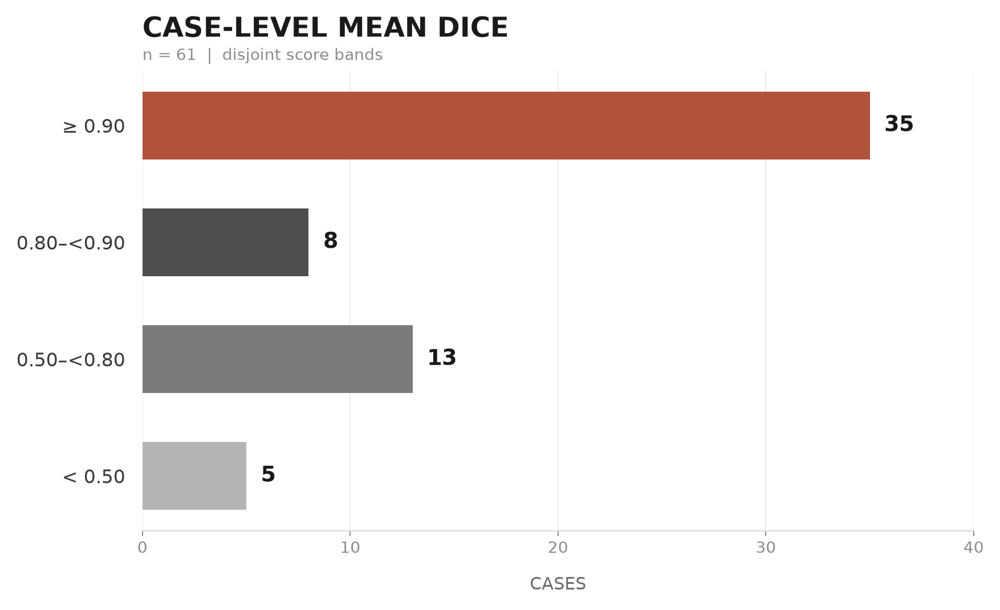

目的： 公開の VerSe 2020 CT を用い、CPU で椎骨を分割するベースラインです。
目的： 公開の VerSe 2020 CT を用い、CPU で椎骨を分割するベースラインです。
Purpose: a CPU vertebra-segmentation baseline validated on public VerSe 2020 CT.
spine-seg はオフライン事前検査とグリッド・ボクセル検証を通ります。spine-seg はオフライン事前検査とグリッド・ボクセル検証を通ります。spine-seg applies a no-network preflight plus grid and voxel verification.